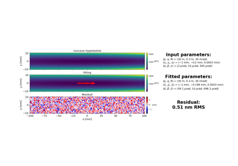
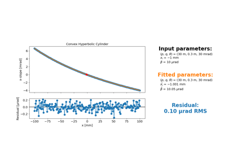
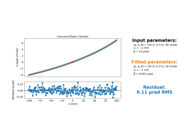

Example Gallery
This gallery shows example Python scripts demonstrating how to use our code. Each example script is automatically run and the output and figures are captured below.
Example 01: Fit concave ellipsoid
Example 01: Fit concave ellipsoid

Example 02: Fit concave hyperboloid
Example 02: Fit concave hyperboloid

Example 03: Fit convex hyperbolic cylinder
Example 03: Fit convex hyperbolic cylinder

Example 04: Fit concave elliptic cylinder
Example 04: Fit concave elliptic cylinder